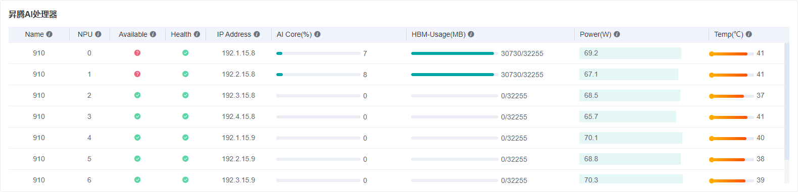
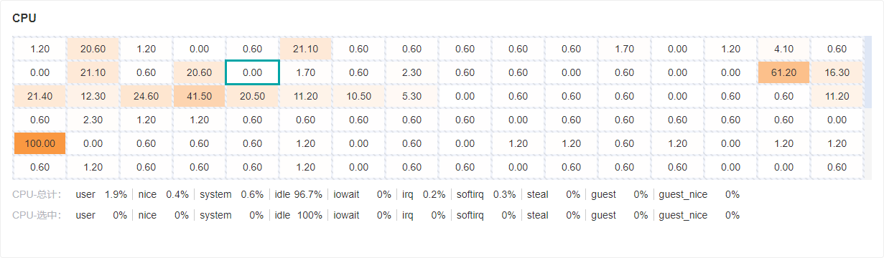
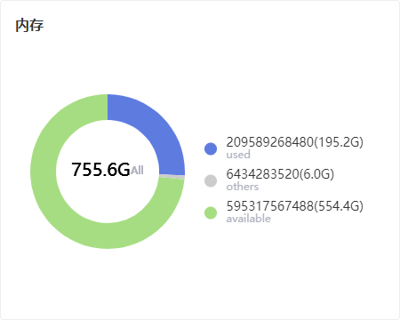

硬件资源

概述
用户可查看昇腾AI处理器、CPU、内存等系统指标，从而分配适当的资源进行训练。直接启动MindInsight，点击导航栏的“硬件资源”即可查看。
昇腾AI处理器看板
昇腾AI处理器看板用于查看当前各芯片的信息。

图1：硬件资源昇腾AI处理器看板
图1是一个表格，每一行展示了某一时刻各芯片的信息。其中每一列的指标如下：
Name: 芯片名称。
NPU: 芯片号，从
0到7.Available: 芯片是否空闲。
Health: 芯片健康指数。
IP Address: 芯片IP地址。
AI Core(%): 芯片利用率。
HBM-Usage(MB): 芯片已用的HBM内存。
Power(W): 芯片功率。
Temp(°C): 芯片温度。
目前芯片是否空闲的结果仅供参考。
CPU看板
CPU看板用于查看当前系统CPU总计及每个核的信息。

图2：硬件资源CPU看板
图2的二维表格展示了CPU每个核的使用率百分比；下面两行分别展示了CPU-总计和CPU-选中的详细指标。
user: 运行于用户态的时间百分比。
system: 运行于内核态的时间百分比。
idle: 处于空闲状态的时间百分比。
nice: 用于运行低优先级进程的时间百分比。
iowait: 用于等待IO的时间百分比。
irq: 用于处理硬中断的时间百分比。
softirq: 用于处理软中断的时间百分比。
steal: 被其他虚拟机抢夺的时间百分比。
guest: 用于运行虚拟机的时间百分比。
guest_nice: 用于运行低优先级虚拟机的时间百分比。
interrupt: 用于处理硬中断的时间百分比。
dpc: 用于远程调用的时间百分比。
不同的系统展示的CPU指标可能有所不同。
内存看板
内存用于查看当前系统内存的信息。

图3：硬件资源内存看板
图3用一个扇形图展示了已用内存和可用内存。其他的内存归类到了others一项。